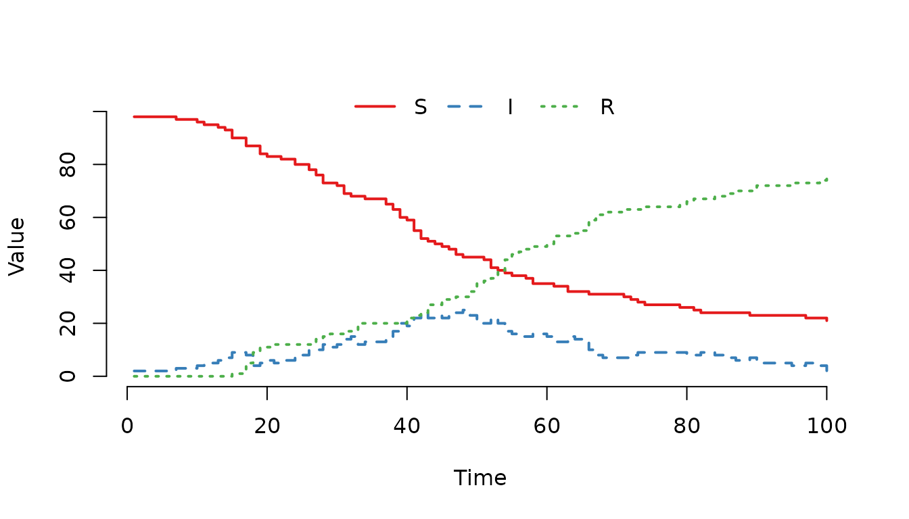
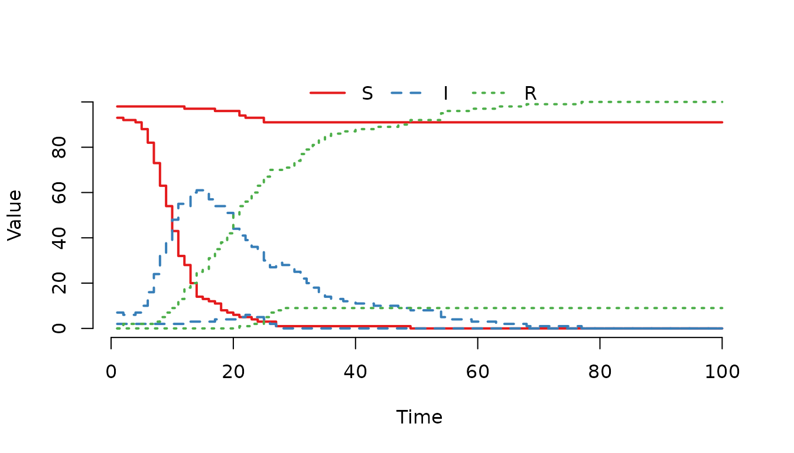
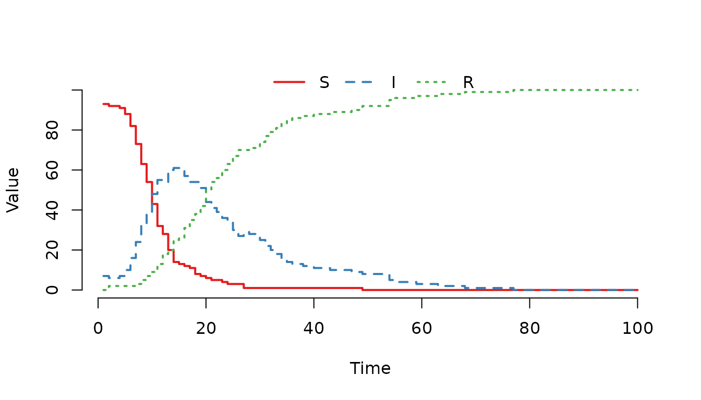
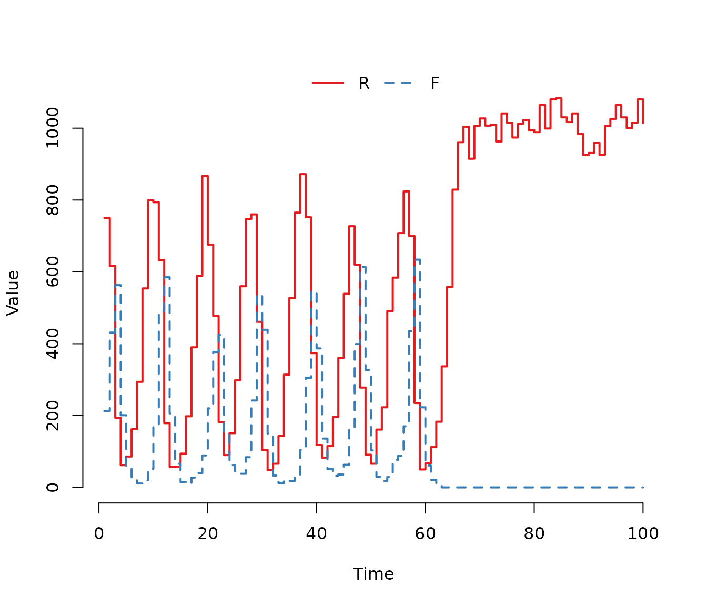
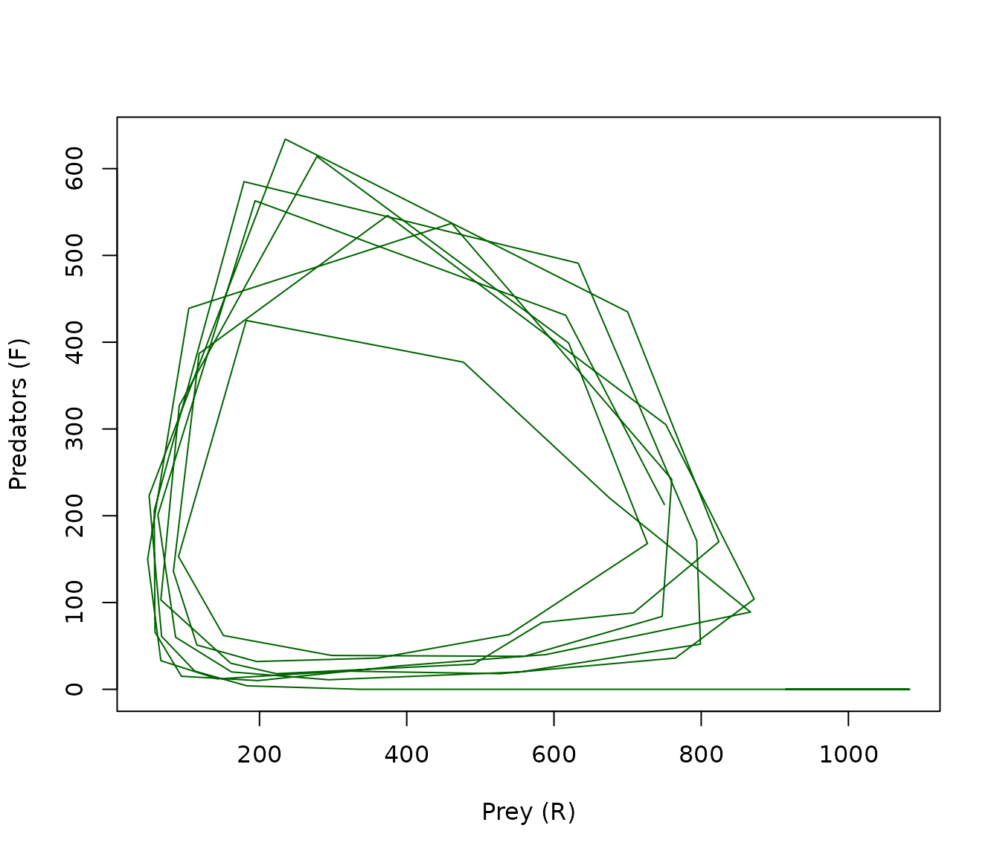
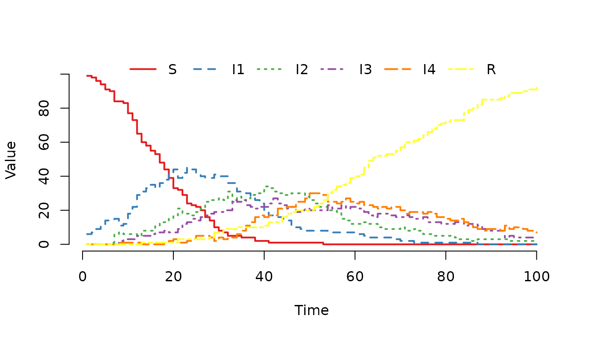
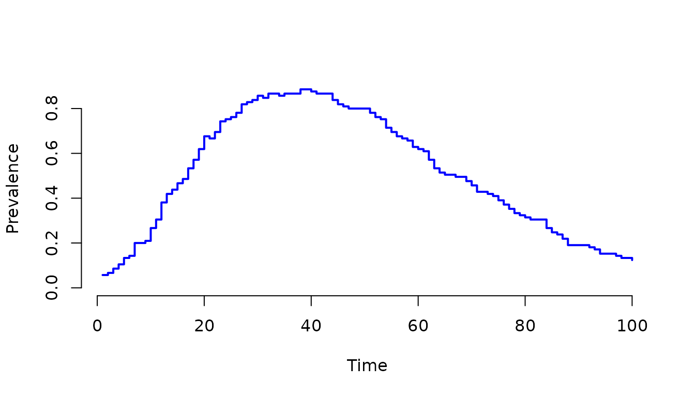

Overview
The mparse function is the primary interface for
defining custom compartment models in SimInf. Instead of writing complex
C code manually, mparse allows you to describe your model’s
transitions using a simple, human-readable string syntax in R. The
function then parses this description, generates model-specific C code,
and returns a SimInf_model object ready for simulation.
This approach combines the ease of defining models in R with the computational speed of compiled C code. It is particularly well-suited for models with complex propensity functions, multiple compartments, or node-specific parameters.
In this vignette, we will explore:
- The basic syntax for defining transitions.
- How to define variables and population sizes.
- How to incorporate global and local data.
- How to run and visualize the resulting model.
Let us first load the SimInf package.
The Basic Syntax: Transitions
The core component of mparse is the
transitions argument, which is a character vector
describing how individuals move between compartments. Each transition
follows a standard format:
\text{Source} \rightarrow \text{Propensity} \rightarrow \text{Destination}
- Source: The compartment the individual leaves.
- Propensity: The rate at which the transition occurs (a mathematical expression).
- Destination: The compartment the individual enters.
A Simple SI Model
Let us start with a classic SI model where susceptible individuals (S) become infected (I) upon contact. The force of infection is often modeled as \beta I / (S + I), where \beta is the transmission rate and S + I is the total population.
We define the transition as follows:
transitions <- "S -> beta * S * I / (S + I) -> I"Here:
- S is the source compartment.
- beta * S * I / (S + I) is the propensity (rate).
- I is the destination compartment.
Adding Recovery: The SIR Model
To create a standard SIR model, we add a second transition where infected individuals recover and move to the recovered compartment (R). The recovery rate is typically \gamma I.
transitions <- c(
"S -> beta * S * I / (S + I + R) -> I",
"I -> gamma * I -> R"
)Now we have a complete model definition. Let us create the model object. We need to specify:
-
transitions: The vector we just created. -
compartments: A vector of all unique compartment names. -
gdata: A named vector of global parameters (beta and gamma). -
u0: The initial state vector (number of individuals in each compartment). -
tspan: vector of time points that determines both the duration of the simulation and the time points at which the state of the system is recorded.
model <- mparse(
transitions = transitions,
compartments = c("S", "I", "R"),
gdata = c(beta = 0.16, gamma = 0.077),
u0 = data.frame(S = 99, I = 1, R = 0),
tspan = 1:100
)The mparse function prepares the model definition.
Compilation occurs when run() is first called, and the
compiled code is cached for efficiency. Subsequent calls to
run() detect the compiled code and skip the compilation
step. Once created, we can run the simulation and plot the results. For
reproducibility, we first call the set.seed() function
since there is random sampling involved when picking individuals from
the compartments.

Figure 1. Classic SIR epidemic curve generated with mparse.
Defining Variables and Population Size
In the previous example, we calculated the total population size
directly in the propensity expression as (S + I + R). While
this works perfectly for simple models, repeating the same expression in
multiple transitions can make the code hard to read and maintain. If the
definition of the population changes (e.g., excluding a specific
compartment), you would have to update every transition where it
appears.
mparse allows us to define variables using the
assignment operator <-. These variables are evaluated
within the transition rate functions and can be reused across multiple
transitions. This makes the model definition cleaner and easier to
modify.
Defining the Total Population
Let us rewrite the SIR model to define the total population
N as a variable. We place the variable definition in the
transitions vector. The order of definitions does not
matter; mparse will resolve dependencies automatically.
transitions <- c(
"S -> beta * S * I / N -> I",
"I -> gamma * I -> R",
"N <- S + I + R")Data Types: Integer vs. Double
Although the primary benefit of variables is readability,
mparse also allows you to control the data type of the
variable. By default, variables are treated as double (floating-point
numbers). However, for population counts, it is often semantically
clearer to define them as integers. We can enforce this by prefixing the
variable name with (int).
transitions <- c(
"S -> beta * S * I / N -> I",
"I -> gamma * I -> R",
"(int)N <- S + I + R")Using (int)N tells mparse to treat N as an integer.
While the compiler may optimize repeated calculations of
S + I + R anyway, explicitly defining N ensures that the
logic is centralized and the code remains easy to read.
Creating and Running the Model
Let us create the model using the variable definition. Note that we no longer need to calculate it inline in the propensity expression.
model <- mparse(
transitions = transitions,
compartments = c("S", "I", "R"),
gdata = c(beta = 0.16, gamma = 0.077),
u0 = data.frame(S = 99, I = 1, R = 0),
tspan = 1:100
)Running the model produces the same results as before, but the transition definitions are now more concise and easier to manage. Note that we use the same seed value as before.

Figure 2. SIR epidemic curve using a defined variable for population size. The results are identical to Figure 1.
Handling Edge Cases: Division by Zero
In stochastic simulations, it is possible for a node to become empty (e.g., all individuals die or move away). If a transition involves dividing by the total population N, and N becomes zero, the resulting rate is undefined. SimInf detects this issue and stops the simulation with an “Invalid rate detected” error.
Since mparse translates the propensity expressions into
C code, we can use the C ternary operator
(condition ? true_value : false_value) to handle this
gracefully.
The syntax a ? b : c evaluates to b if
a is true, and c otherwise. For example, to
avoid dividing by zero when N = 0, we
can write:
transitions <- c(
"S -> N > 0 ? beta * S * I / N : 0 -> I",
"I -> gamma * I -> R",
"(int)N <- S + I + R"
)Here, the expression N > 0 ? beta * S * I / N : 0
works as follows:
- If N>0, the force of infection is calculated normally.
- If N=0, the rate is set to 0, preventing the division and allowing the simulation to continue (effectively, no new infections can occur in an empty population).
This is a robust pattern for any propensity that involves division by a dynamic quantity, such as the total population size.
Creating the Model
Let us create the model with this safety check. Note that the logic remains the same, but the simulation is now robust against empty nodes.
model <- mparse(
transitions = transitions,
compartments = c("S", "I", "R"),
gdata = c(beta = 0.16, gamma = 0.077),
u0 = data.frame(S = 99, I = 1, R = 0),
tspan = 1:100
)
set.seed(22)
plot(run(model))
Figure 3. SIR model using a ternary operator to prevent division by zero. Although the curve is identical to previous examples (as the population did not reach zero), this syntax ensures the simulation continues safely if the node becomes empty.
Incorporating Global and Local Data
So far, we have defined models where all parameters (like
beta and gamma) are the same for the entire
population. In many epidemiological scenarios, however, parameters vary
between subpopulations (nodes). For example, different farms might have
different contact rates due to management practices, while the
biological recovery rate remains constant across all farms.
SimInf distinguishes between two types of data:
-
Global Data (
gdata): Parameters shared by all nodes (e.g., recovery rate \gamma). -
Local Data (
ldata): Parameters specific to each node (e.g., transmission rate \beta).
A Two-Farm Model
Let us create a model with two independent farms (nodes). We assume:
- Both farms have the same recovery rate
(
gamma = 0.077). - Farm 1 has a low transmission rate
(
beta_farm = 0.1). - Farm 2 has a high transmission rate
(
beta_farm = 0.4).
We define the transition using a placeholder name for the local
parameter, beta_farm. Note that we also include the safety
check for division by zero using the ternary operator, as discussed
previously.
transitions <- c(
"S -> N > 0 ? beta_farm * S * I / N : 0 -> I",
"I -> gamma * I -> R",
"(int)N <- S + I + R"
)Defining Global and Local Data
We pass the global parameter gamma in gdata. For the
local parameter beta_farm, we create a data.frame where
each row corresponds to a node. The column name must match the variable
name used in the transitions.
gdata <- c(gamma = 0.077)
ldata <- data.frame(
beta_farm = c(0.1, 0.4) # Farm 1: 0.1, Farm 2: 0.4
)Initial Conditions for Multiple Nodes
The initial state u0 must also be a
data.frame with one row per node. The columns correspond to
the compartments. The order of rows in u0 and
ldata must match (row 1 is Node 1, row 2 is Node 2,
etc.).
It is crucial that the number of rows in u0 matches the
number of rows in ldata. The rows must be aligned by node
index: the first row of both data frames corresponds to Node 1, the
second row to Node 2, and so on. If the row counts differ or the order
is mixed, the model will assign parameters to the wrong nodes, leading
to incorrect results.
u0 <- data.frame(
S = c(99, 95), # Farm 1: 99 S, Farm 2: 95 S
I = c(1, 5), # Farm 1: 1 I, Farm 2: 5 I
R = c(0, 0) # Both start with 0 R
)Creating and Running the Model
Now we create the model. mparse automatically associates the rows of ldata and u0 with the nodes (1, 2, …).
model <- mparse(
transitions = transitions,
compartments = c("S", "I", "R"),
gdata = gdata,
ldata = ldata,
u0 = u0,
tspan = 1:100
)We can now run the simulation. Since we have multiple nodes, the plot() function can display the trajectories for each node separately if we use range = FALSE to display the trajectory lines without the shaded range bands.

Figure 4. Epidemic curves for two farms with different
transmission rates in a single stochastic realization. Farm 2 (higher
beta_farm) shows a faster outbreak compared to Farm 1,
reflecting the expected impact of the higher transmission rate, though
exact outcome varies due to randomness.
In this realization, Farm 2 (the one with the higher
beta_farm) shows a faster outbreak compared to Farm 1. On
average, the higher transmission rate leads to a steeper rise in
infections, though individual stochastic runs may vary. This
demonstrates how ldata allows us to easily simulate
heterogeneity across a network of populations without rewriting the
transition logic.
Inspecting Results by Node
To inspect the results for a specific node, we can use the
index argument in plot() or
trajectory().
plot(result, index = 2)
Figure 5. Trajectory for Farm 2 only, showing the rapid spread due to the high transmission rate in this specific realization.
This flexibility makes mparse ideal for spatial models where each node has unique characteristics, such as different herd sizes, management practices, or risk factors.
Modeling Open Populations: The Empty Set
So far, our models have been “closed,” meaning the total number of individuals remains constant (except for transitions between compartments). In reality, populations change due to births and deaths.
SimInf offers two ways to model these changes:
-
Continuous rates using the special symbol
@(the empty set), which we cover here. This is ideal for natural mortality or constant birth rates that happen continuously over time. - Scheduled events, as described in the Scheduled Events vignette. This is better for discrete, deterministic events (e.g., a specific culling date or a one-time introduction of animals).
In this section, we focus on the @ syntax for continuous
processes.
-
Deaths: Individuals leaving the system are directed
to
@. Example:I -> mu * I -> @removes infected individuals at ratemu. -
Births: Individuals entering the system come from
@. Example:@ -> lambda -> Sadds new susceptible individuals at ratelambda.
Example: Predator-Prey Dynamics
To illustrate a more complex system where births and deaths drive the dynamics, consider the Rosenzweig-MacArthur predator-prey model. In this model, prey (R) grow logistically and are consumed by predators (F), while predators die naturally and reproduce based on consumption.
This example demonstrates how mparse handles:
- Non-linear propensity functions (e.g., the Type-II functional response).
-
Multiple birth and death processes using the empty
set
@. - Density-dependent growth (logistic term).
The model consists of five transitions:
- Prey Birth: New prey are born at a rate dependent on the current population. \emptyset \xrightarrow{b_R \cdot R} R
- Prey Death (Natural): Prey die due to competition or natural causes. R \xrightarrow{(d_R + (b_R - d_R) \cdot R / K) \cdot R} \emptyset
- Prey Death (Predation): Prey are eaten by predators. R \xrightarrow{\frac{\alpha}{1 + w \cdot R} \cdot R \cdot F} \emptyset
- Predator Birth: Predators reproduce based on the energy gained from eating prey. \emptyset \xrightarrow{b_F \cdot \frac{\alpha}{1 + w \cdot R} \cdot R \cdot F} F
- Predator Death: Predators die naturally. F \xrightarrow{d_F \cdot F} \emptyset
In mparse syntax, these transitions are written as:
transitions <- c(
"@ -> bR * R -> R",
"R -> (dR + (bR - dR) * R / K) * R -> @",
"R -> alpha / (1 + w * R) * R * F -> @",
"@ -> bF * alpha / (1 + w * R) * R * F -> F",
"F -> dF * F -> @"
)Here, @ appears on the left side for births (adding
individuals) and on the right side for deaths (removing individuals).
The parameters are defined as:
-
bR,dR: Prey birth and death rates. -
K: Carrying capacity of the prey. -
alpha: Predation efficiency. -
w: Degree of predator saturation. -
bF,dF: Predator birth and death rates.
Let us define the parameters and initial conditions. We assume an initial population of 1000 prey and 100 predators.
parameters <- c(
bR = 2, bF = 2, dR = 1, K = 1000,
alpha = 0.007, w = 0.0035, dF = 2
)
u0 <- data.frame(R = 1000, F = 100)Now we create the model. Since there are no between-node movements in this example, we can simulate a single node or replicate it to see the distribution of outcomes.
model <- mparse(
transitions = transitions,
compartments = c("R", "F"),
gdata = parameters,
u0 = u0,
tspan = 1:100
)We run the simulation and plot the results. Because the system is stochastic, we might see the predators go extinct in some realizations, while in others, the populations oscillate around a stable limit cycle.

Figure 6. One stochastic realization of the Rosenzweig-MacArthur predator-prey model. The populations exhibit cyclic oscillations characteristic of the deterministic limit cycle, but stochastic fluctuations eventually lead to the extinction of the predator population in this specific run.
To better visualize the dynamics, we can plot the phase plane (predators vs. prey) for a single realization. This shows the cyclic nature of the interaction.
plot(F ~ R, data = trajectory(result), type = "l", col = "darkgreen",
xlab = "Prey (R)", ylab = "Predators (F)", main = "")
Figure 7. Phase plane trajectory of the predator-prey model. The path spirals outward from the initial conditions, tracing the characteristic limit cycle of the Rosenzweig-MacArthur model before stochastic fluctuations drive the predator population to extinction.
In this example, the @ symbol allows us to elegantly
model the open nature of the ecosystem, where individuals enter and
leave the system continuously. The non-linear terms (like
1 / (1 + w * R)) are handled seamlessly by the parser,
demonstrating the flexibility of mparse for complex ecological
models.
Non-Exponential Passage Times (Erlang Distribution)
For many diseases, it is unrealistic to assume that the duration of the infectious period is exponentially distributed. A more realistic assumption is often a Gamma distribution with an integer shape parameter, also known as an Erlang distribution.
In SimInf, the Erlang distribution can be implemented by splitting the infectious stage into a sequence of k independent compartments (I_1, I_2, \dots, I_k). An individual must pass through each stage sequentially before recovering. This results in a waiting time that follows an Erlang distribution with shape k.
Let us illustrate this with an SIR model where the infectious period follows an Erlang distribution with shape k=4. We define four infectious compartments: I_1, I_2, I_3, I_4.
The transitions are:
- Infection: Susceptible individuals move to the first infectious stage (I_1).
- Progression: Individuals move from I_1 \to I_2 \to I_3 \to I_4 at rate \gamma.
- Recovery: Individuals move from I_4 \to R at rate \gamma.
In mparse syntax:
Notice that we can define variables that depend on other variables.
Here, we first define I as the sum of all infectious
stages, and then use I to calculate the total population
N. This modular approach keeps the transition expressions
clean and avoids repetitive calculations.
transitions <- c(
"S -> N > 0 ? beta * S * I / N : 0 -> I1",
"I1 -> gamma * I1 -> I2",
"I2 -> gamma * I2 -> I3",
"I3 -> gamma * I3 -> I4",
"I4 -> gamma * I4 -> R",
"I <- I1 + I2 + I3 + I4",
"N <- S + I + R"
)Note that the force of infection depends on the total number of
infected individuals I1+I2+I3+I4, but the progression
happens step-by-step.
Let us define the parameters and initial conditions. We start with 5
individuals in the first infectious stage (I1).
model <- mparse(
transitions = transitions,
compartments = c("S", "I1", "I2", "I3", "I4", "R"),
gdata = c(beta = 0.16, gamma = 0.077),
u0 = data.frame(S = 100, I1 = 5, I2 = 0, I3 = 0, I4 = 0, R = 0),
tspan = 1:100
)We run the simulation and plot the results. The trajectory will show
the infection spreading through the stages (I1 to
I4) before individuals recover.

Figure 8. One realization of a stochastic SIR model
with an Erlang-distributed infectious period (shape=4). The trajectory
shows the infection progressing sequentially through the four infectious
stages (I1 -> I2 -> I3 -> I4) before individuals
recover.
To analyze the results, we can calculate the prevalence of infection,
which is the proportion of individuals in any of the infectious stages
(I1+I2+I3+I4). As described in Post-process data in a
trajectory vignette, the plot() function allows us to
specify a formula where the left-hand side defines the “cases” and the
right-hand side defines the “at-risk” population.
plot(result, I1 + I2 + I3 + I4 ~ ., col = "blue", lwd = 2, ylab = "Prevalence")
Figure 9. Prevalence of infection over time, calculated
as the sum of individuals in all infectious stages
(I1 + I2 + I3 + I4). This demonstrates how to aggregate
multiple compartments to track the total burden of disease in a
stage-structured model.
This example demonstrates how mparse makes it easy to extend basic models to include more realistic biological assumptions, such as non-exponential waiting times, without writing any C code.